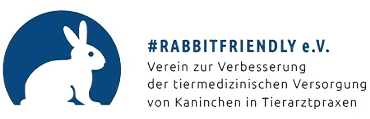
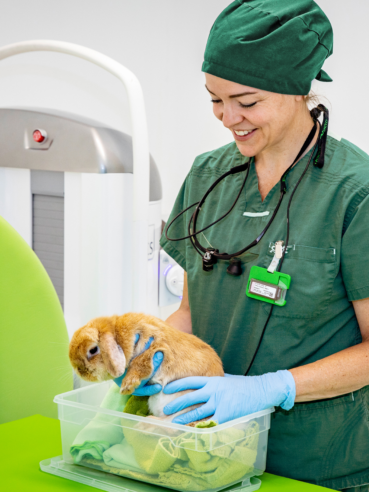
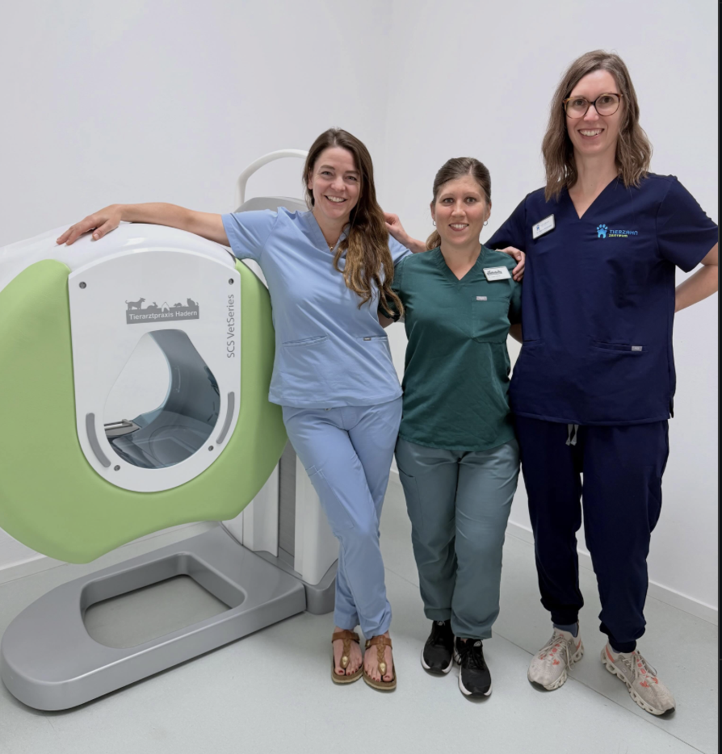
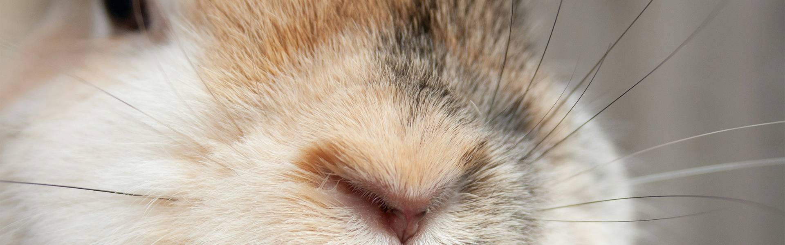

Anmelden#rabbitfriendly-
Day 2026
Warum einfach, wenn's auch Kaninchen gibt?
Chronisches. Komplexes. Frustrierendes.
Neue Erkenntnisse, evidenzbasierte Therapiestrategien und praxisnahe Lösungen für die Fälle, die uns immer wieder beschäftigen.

2026
Warum einfach, wenn's auch Kaninchen gibt?
Chronisches. Komplexes. Frustrierendes.
Die größten Herausforderungen in der Kaninchenmedizin sind oft nicht die seltenen Erkrankungen, sondern die komplexen Alltagsfälle. Dieser #rabbitfriendly-Day beleuchtet den aktuellen Stand der Wissenschaft zu Themen wie zum Beispiel Narkosezwischenfällen, Pododermatitis, Kaninchenschnupfen, Adipositas oder Urolithiasis. Freuen Sie sich auf neue Erkenntnisse, evidenzbasierte Therapiestrategien und praxisnahe Lösungsansätze für die Fälle, die uns in der Praxis immer wieder beschäftigen.
Kaninchenmedizin gezielt verbessern.
#rabbitfriendly e.V. ist ein gemeinnütziger Verein ohne eigene wirtschaftliche Interessen. Er stärkt das medizinische Wissen rund um Kaninchen und setzt sich dafür ein, dass Einrichtungen und Ausstattungen tierärztlicher Praxen die Belange von Kaninchen berücksichtigen und eine hochwertige Kaninchenmedizin ermöglichen.
Mehr über #rabbitfriendly e.V. ↗
Das System hinter der Unterstützung.
Moderne 3-D-Bildgebung für die tierärztliche Praxis – sichtbar an der Seite des #rabbitfriendly-Days, während Verein, Fortbildung und Kaninchen im Mittelpunkt bleiben.
SCS VetSeries® ansehen ↗Präsenz oder Live-Online teilnehmen.
Die Frühbucherpreise gelten bis einschließlich 31. August 2026. Ab dem 1. September gelten die regulären Teilnahmegebühren.
Bitte wählen Sie Ihre Ticketkategorie und tragen Sie anschließend Ihre Kontaktdaten ein.
Zur Anmeldung→
Zirndorfbei Nürnberg
Persönlich treffen.
Gemeinsam weiterdenken.
Seminarzentrum Tierarztpraxis Stocksmeier
Bahnhofstraße 32
90513 Zirndorf
Ihr Platz beim
#rabbitfriendly-Day.
Ticket auswählen, Kontaktdaten eintragen und die Anmeldung direkt absenden.